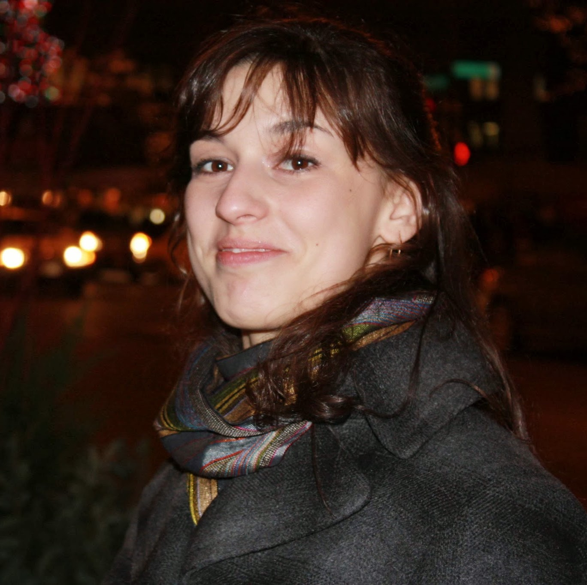

Vanya Yaneva
ku.ca.de@avenay.aynav
Informatics Forum, 4.23
10 Crichton Street
EH8 9AB Edinburgh
United Kindgdom
I am a PhD student at the CDT in Pervasive Parallelism at the University of Edinburgh.
My background is in High Performance Computing and I hold an MSc from the Edinburgh Parallel Computing Centre.
I also have three years of experience as a software engineer in industry.
My research interests are in the areas of software testing, software engineering, parallel architectures, programming models and compilers.
I am currently looking into ways to accelerate the execution of large application test suites by running test cases in parallel on heterogeneous architectures.
My supervisors are Dr Ajitha Rajan and Dr Christophe Dubach.
-
Accelerated Finite State Machine Test Execution Using GPUs
December 2018
Vanya Yaneva, Arnav Kapoor, Ajitha Rajan, Christophe Dubach
In APSEC 2018
-
Assessing the Effect of Data Transformations on Test Suite Compilation
October 2018
Panagiotis Stratis, Vanya Yaneva, Ajitha Rajan
In ESEM 2018
-
Compiler-Assisted Test Acceleration Using GPUs
June 2018
Vanya Yaneva
In ICSE 2018, ACM Student Research Competition
-
Compiler-Assisted Test Acceleration on GPUs for Embedded Software
July 2017
Vanya Yaneva, Ajitha Rajan, and Christophe Dubach
In ISSTA 2017
-
ParTeCL: Parallel Testing Using OpenCL
July 2017
Vanya Yaneva, Ajitha Rajan, and Christophe Dubach
In ISSTA 2017
-
GPU Acceleration of Functional Software Testing
Presented at:
- 2018 EPSRC CDT Industrial Engagement Event, Edinburgh
April 2018
-
Accelerated Finite State Machine Testing Using GPUs
Presented at:
- CDT PPar Lunch, University of Edinburgh
April 2018
-
Compiler-Assisted Test Acceleration on GPUs for Embedded Software
Presented at:
- LFCS Lab Lunch, University of Edinburgh
January 2018
- Codeplay Software, Edinburgh
June 2017
- PPar CDT Student Showcase, University of Edinburgh
June 2017
-
Compiler-Assisted Test Acceleration Using GPUs
Presented at:
- 2016 EPSRC CDT PPar & CDT HiPEDS Industrial Engagement Event, Edinburgh
November 2016
-
Accelerated Test Execution Using GPUs
Presented at:
- MathWorks, Cambridge
May 2016
- 3DT and Friends Event, University of Edinburgh
May 2016
-
Student Volunteer, APSEC 2018
December 2018
-
PC Member, ECOOP/ISSTA 2018 Doctoral Symposium
May 2018
-
The Claire Jones Prize
November 2016
School of Informatics, University of Edinburgh
Awarded to the best performing female MSc student.
-
High Performance Computing Scholarship
May 2012
School of Physics and Astronomy, University of Edinburgh